You are viewing May3-May6!
| Date | Fixture Bold-faced team is selected by AIGoalie to win. | Odds Pre-match odds of the selected team winning. | Win How confident AIGoalie is that the selected team will win. Low confidence indicates unpredictability of the match. ▼ | Result Whether the selected team won, drew, or lost. | Over The minimum number of goals predicted by AIGoalie. ⚽ = over 0.5 ⚽⚽ = over 1.5 ⚽⚽⚽ = over 2.5 ... ► |
Alerts Home 🏥 = Considerable injuries 🏥🏥 = Major injuries 📉 = Dip in form Note, you may see injuries when expanding match but no alert here, meaning the model does not consider them important. |
Alerts Away 🏥 = Considerable injuries 🏥🏥 = Major injuries 📉 = Dip in form Note, you may see injuries when expanding match but no alert here, meaning the model does not consider them important. |
|
|---|---|---|---|---|---|---|---|---|
| May 4 | Real Madrid 3:0 Cadiz Form: WWW Form: LLD |
3.04 vs -4.12 | 1.37 | 90% | 1 | ⚽ 1.62 |
📉 Away team has a dip in form recently | |
| May 4 | Sp Lisbon 3:0 Portimonense Form: WWD Form: DDL |
3.01 vs -4.43 | 1.09 | 90% | 1 | ⚽⚽⚽⚽ 4.46 |
🏥🏥 📉 Away team has MAJOR injuries and a dip in form recently | |
| May 5 | Feyenoord 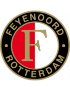 5:0 Zwolle Form: WWW Form: WDW |
2.23 vs -3.73 | 1.11 | 82% | 1 | ⚽⚽ 2.62 |
🏥 Home team has considerable injuries | 🏥🏥 Away team has MAJOR injuries |
| May 4 | Sassuolo 1:0 Inter Form: DLL Form: DWW |
-3.24 vs 2.15 | 1.53 | 81% | 0 | ⚽⚽⚽ 3.48 |
📉 Home team has a dip in form recently | |
| May 5 | PSV Eindhoven 4:2 Sparta Rotterdam Form: WWW Form: LWW |
1.82 vs -3.42 | 1.14 | 78% | 1 | ⚽⚽ 2.32 |
🏥 Home team has considerable injuries | 🏥🏥 Away team has MAJOR injuries |
| May 4 | Man City 5:1 Wolves Form: WWW Form: LLW |
1.81 vs -3.0 | 1.11 | 78% | 1 | ⚽ 1.74 |
🏥 📉 Away team has considerable injuries and a dip in form recently | |
| May 5 | Galatasaray 6:1 Sivasspor Form: WWW Form: WDW |
1.72 vs -3.3 | 1.17 | 77% | 1 | ⚽ 1.56 |
🏥🏥 Home team has MAJOR injuries | |
| May 4 | Leicester 0:2 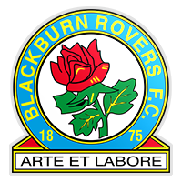 Blackburn Form: WWW Form: WLD |
1.71 vs -2.96 | 1.63 | 77% | 0 | ⚽ 1.96 |
🏥 Home team has considerable injuries | 📉 Away team has a dip in form recently |
| May 5 | Famalicao 2:0 Benfica Form: LDL Form: WWW |
-2.64 vs 1.52 | 1.41 | 75% | 0 | ⚽⚽ 2.09 |
📉 Home team has a dip in form recently | |
| May 4 | Arsenal 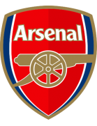 3:0 Bournemouth Form: WWW Form: LWW |
1.4 vs -2.58 | 1.22 | 74% | 1 | ⚽⚽ 2.05 |
🏥 Away team has considerable injuries | |
| May 5 | Milan 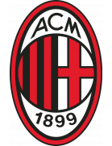 3:3 Genoa Form: DLD Form: DLW |
1.4 vs -2.69 | 1.52 | 74% | 0.5 | ⚽ 1.69 |
🏥 📉 Home team has considerable injuries and a dip in form recently | 🏥 📉 Away team has considerable injuries and a dip in form recently |
| May 4 | Ipswich 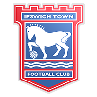 2:0 Huddersfield Form: DDW Form: DLD |
1.24 vs -2.27 | 1.27 | 72% | 1 | ⚽⚽ 2.85 |
📉 Home team has a dip in form recently | 📉 Away team has a dip in form recently |
| May 6 | Konyaspor 0:0 Fenerbahce Form: WLL Form: WDW |
-2.55 vs 1.07 | 1.38 | 71% | 0.5 | ⚽⚽ 2.39 |
📉 Home team has a dip in form recently | 🏥🏥 Away team has MAJOR injuries |
| May 4 | Monaco 4:1 Clermont Form: WWL Form: DLW |
1.04 vs -2.64 | 1.34 | 70% | 1 | ⚽⚽ 2.01 |
🏥🏥 Home team has MAJOR injuries | 🏥 📉 Away team has considerable injuries and a dip in form recently |
| May 3 | Lens 2:0 Lorient Form: LWL Form: LLL |
1.03 vs -2.08 | n/a | 70% | 1 | ⚽ 1.94 |
📉 Home team has a dip in form recently | 📉 Away team has a dip in form recently |
| May 5 | Utrecht 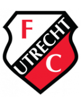 1:0 Vitesse Form: WWD Form: LLW |
0.98 vs -2.42 | 1.36 | 69% | 1 | ⚽⚽ 2.33 |
🏥🏥 Home team has MAJOR injuries | 📉 Away team has a dip in form recently |
| May 5 | Volendam 1:4 Ajax Form: WLL Form: LWD |
-2.64 vs 0.97 | 1.34 | 69% | 1 | ⚽⚽⚽ 3.34 |
🏥🏥 📉 Home team has MAJOR injuries and a dip in form recently | 🏥 📉 Away team has considerable injuries and a dip in form recently |
| May 4 | Chaves 0:3 Porto Form: WDL Form: DWD |
-2.14 vs 0.97 | 1.26 | 69% | 1 | ⚽⚽ 2.18 |
📉 Home team has a dip in form recently | 📉 Away team has a dip in form recently |
| May 5 | Arouca 0:0 Estrela Form: WDD Form: DDL |
0.91 vs -2.54 | 2.06 | 66% | 0.5 | ⚽⚽ 2.5 |
🏥🏥 📉 Home team has MAJOR injuries and a dip in form recently | 📉 Away team has a dip in form recently |
| May 5 | Sp Braga 4:3 Casa Pia Form: WWL Form: DLW |
0.91 vs -2.25 | 1.32 | 66% | 1 | ⚽⚽ 2.02 |
🏥 Home team has considerable injuries | 🏥 📉 Away team has considerable injuries and a dip in form recently |
| May 4 | Brest 0:0 Nantes Form: LLW Form: WLD |
0.9 vs -2.38 | 1.73 | 66% | 0.5 | ⚽ 1.49 |
🏥 📉 Home team has considerable injuries and a dip in form recently | 🏥 📉 Away team has considerable injuries and a dip in form recently |
| May 6 | Salernitana 1:2 Atalanta Form: LLL Form: DWW |
-2.14 vs 0.86 | 1.38 | 64% | 1 | ⚽⚽⚽ 3.22 |
📉 Home team has a dip in form recently | 🏥 Away team has considerable injuries |
| May 4 | Wolfsburg 3:0 Darmstadt Form: LWW Form: LWL |
0.82 vs -1.97 | 1.42 | 63% | 1 | ⚽ 1.38 |
🏥 📉 Away team has considerable injuries and a dip in form recently | |
| May 4 | Dortmund 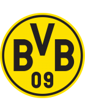 5:1 Augsburg Form: WDL Form: WLL |
0.78 vs -2.01 | 1.89 | 61% | 1 | ⚽ 1.93 |
📉 Home team has a dip in form recently | 🏥 📉 Away team has considerable injuries and a dip in form recently |
| May 5 | Ein Frankfurt 1:5 Leverkusen Form: LWL Form: WDD |
-1.64 vs 0.65 | 2.3 | 56% | 1 | ⚽ 1.89 |
📉 Home team has a dip in form recently | 📉 Away team has a dip in form recently |
| May 3 | Moreirense 1:0 Vizela Form: LLW Form: LLD |
0.64 vs -1.96 | n/a | 56% | 1 | ⚽ 1.31 |
🏥 📉 Home team has considerable injuries and a dip in form recently | 📉 Away team has a dip in form recently |
| May 5 | Buyuksehyr 4:1 Kasimpasa Form: WWW Form: LLW |
0.57 vs -1.97 | 2.04 | 53% | 1 | ⚽ 1.94 |
🏥 Home team has considerable injuries | 🏥 📉 Away team has considerable injuries and a dip in form recently |
| May 4 | Leeds 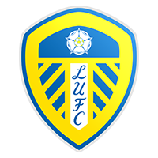 1:2 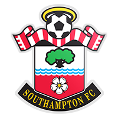 Southampton Form: LWL Form: LLL |
0.56 vs -1.81 | 1.62 | 53% | 0 | ⚽⚽ 2.54 |
📉 Home team has a dip in form recently | 🏥 📉 Away team has considerable injuries and a dip in form recently |
| May 4 | Middlesbrough 3:1 Watford Form: DLW Form: LDW |
0.55 vs -1.66 | 1.76 | 52% | 1 | ⚽ 1.48 |
📉 Home team has a dip in form recently | 📉 Away team has a dip in form recently |
| May 4 | Sociedad 2:0 Las Palmas Form: DDL Form: LLL |
0.44 vs -1.73 | 1.35 | 46% | 1 | ⚽ 1.09 |
🏥 📉 Home team has considerable injuries and a dip in form recently | 📉 Away team has a dip in form recently |
| May 5 | Liverpool 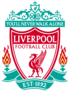 4:2 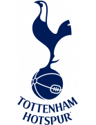 Tottenham Form: WLD Form: LLL |
0.41 vs -1.61 | 1.47 | 43% | 1 | ⚽⚽ 2.47 |
📉 Home team has a dip in form recently | 🏥 📉 Away team has considerable injuries and a dip in form recently |
| May 5 | Empoli 0:0 Frosinone Form: LWL Form: DDW |
0.4 vs -1.66 | 2.52 | 42% | 0.5 | ⚽ 1.35 |
📉 Home team has a dip in form recently | 🏥 📉 Away team has considerable injuries and a dip in form recently |
| May 4 | Rio Ave 2:1 Guimaraes Form: DDD Form: DLW |
-1.85 vs 0.4 | 2.56 | 42% | 0 | 😴 0.7 |
🏥🏥 📉 Home team has MAJOR injuries and a dip in form recently | 📉 Away team has a dip in form recently |
| May 5 | Chelsea 5:0 West Ham Form: LDW Form: LLD |
0.36 vs -1.83 | 1.65 | 39% | 1 | ⚽⚽⚽ 3.06 |
🏥🏥 📉 Home team has MAJOR injuries and a dip in form recently | 📉 Away team has a dip in form recently |
| May 4 | Rotherham 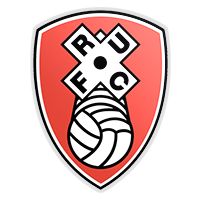 5:2 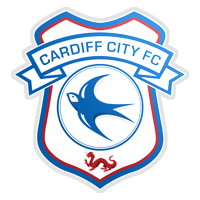 Cardiff Form: LDL Form: LWL |
-1.74 vs 0.31 | 2.32 | 35% | 0 | ⚽ 1.04 |
🏥🏥 📉 Home team has MAJOR injuries and a dip in form recently | 📉 Away team has a dip in form recently |
| May 5 | Union Berlin 3:4 Bochum Form: LLD Form: DLW |
0.22 vs -1.29 | 2.02 | 27% | 0 | ⚽ 1.01 |
📉 Home team has a dip in form recently | 📉 Away team has a dip in form recently |
| May 5 | Valencia 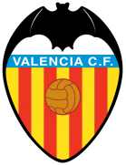 0:1 Alaves Form: WLL Form: LWW |
0.2 vs -1.24 | 2.2 | 26% | 0 | 😴 0.67 |
📉 Home team has a dip in form recently | |
| May 3 | Hoffenheim 1:1 RB Leipzig Form: LWL Form: WWW |
-1.66 vs 0.18 | n/a | 24% | 0.5 | ⚽⚽⚽ 3.66 |
🏥 📉 Home team has considerable injuries and a dip in form recently | 🏥 Away team has considerable injuries |
| May 5 | Sevilla 3:0 Granada Form: WWD Form: WDW |
0.17 vs -1.69 | 1.71 | 24% | 1 | ⚽ 1.44 |
🏥🏥 Home team has MAJOR injuries | |
| May 5 | Heidenheim 1:1 Mainz Form: DLW Form: WDD |
0.15 vs -1.26 | 3.05 | 22% | 0.5 | ⚽ 1.08 |
📉 Home team has a dip in form recently | 📉 Away team has a dip in form recently |
| May 3 | Toulouse 1:2 Montpellier Form: WDW Form: DWD |
0.15 vs -1.26 | n/a | 22% | 0 | ⚽ 1.47 |
🏥 Home team has considerable injuries | 📉 Away team has a dip in form recently |
| May 5 | Oud-Heverlee Leuven 3:1 Standard Form: WDL Form: DDD |
0.13 vs -1.72 | 2.42 | 20% | 1 | ⚽ 1.13 |
📉 Home team has a dip in form recently | 🏥🏥 📉 Away team has MAJOR injuries and a dip in form recently |
| May 5 | Roma 1:1 Juventus Form: LWD Form: DDD |
0.11 vs -1.36 | 2.94 | 19% | 0.5 | ⚽ 1.32 |
📉 Home team has a dip in form recently | 🏥 📉 Away team has considerable injuries and a dip in form recently |
| May 5 | Vallecano 0:1 Almeria Form: DWL Form: DLL |
0.11 vs -1.33 | 1.63 | 19% | 0 | 😴 0.65 |
🏥 📉 Home team has considerable injuries and a dip in form recently | 📉 Away team has a dip in form recently |
| May 6 | Udinese 1:1 Napoli Form: LLD Form: DLD |
-1.31 vs 0.07 | 2.06 | 16% | 0.5 | ⚽ 1.51 |
🏥 📉 Home team has considerable injuries and a dip in form recently | 📉 Away team has a dip in form recently |
| May 4 | Mallorca 0:1 Ath Madrid Form: LLD Form: WLW |
-1.23 vs 0.06 | 2.26 | 15% | 1 | ⚽ 1.13 |
📉 Home team has a dip in form recently | |
| May 4 | Swansea 0:1 Millwall Form: WWD Form: WWW |
0.04 vs -1.41 | 2.08 | 13% | 0 | 😴 0.95 |
🏥🏥 Away team has MAJOR injuries | |
| May 6 | Excelsior 0:3 Nijmegen Form: LWD Form: WDL |
-1.76 vs 0.03 | 2.3 | 12% | 1 | ⚽⚽ 2.94 |
🏥🏥 📉 Home team has MAJOR injuries and a dip in form recently | 🏥🏥 📉 Away team has MAJOR injuries and a dip in form recently |
| May 4 | Stoke 4:0 Bristol City Form: DWW Form: DDW |
0.01 vs -1.07 | 2.16 | 11% | 1 | 😴 0.99 |
📉 Away team has a dip in form recently | |
| May 4 | Coventry 1:2 QPR Form: LDL Form: LWW |
-0.0 vs -1.05 | 2.44 | 10% | 0 | ⚽ 1.85 |
📉 Home team has a dip in form recently | |
| May 5 | Cagliari 1:1 Lecce Form: DDL Form: WWD |
-0.04 vs -1.15 | 2.22 | 9% | 0.5 | ⚽ 1.29 |
📉 Home team has a dip in form recently | 🏥 Away team has considerable injuries |
| May 4 | Monza 2:2 Lazio Form: DLD Form: WWW |
-1.05 vs -0.06 | 1.9 | 9% | 0.5 | ⚽ 1.43 |
📉 Home team has a dip in form recently | |
| May 4 | Werder Bremen 2:2 M'gladbach Form: LWW Form: LLD |
-0.07 vs -1.46 | 2.26 | 9% | 0.5 | ⚽ 1.88 |
🏥🏥 Home team has MAJOR injuries | 📉 Away team has a dip in form recently |
| May 5 | Heracles 0:5 Waalwijk Form: WLL Form: LLD |
-0.09 vs -1.46 | 2.28 | 8% | 0 | ⚽ 1.67 |
🏥🏥 📉 Home team has MAJOR injuries and a dip in form recently | 📉 Away team has a dip in form recently |
| May 4 | Birmingham 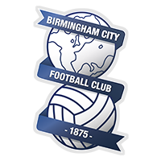 1:0 Norwich Form: WDD Form: WDD |
-1.09 vs -0.09 | 2.92 | 8% | 0 | ⚽ 1.75 |
📉 Home team has a dip in form recently | 🏥 📉 Away team has considerable injuries and a dip in form recently |
| May 3 | Ankaragucu 1:1 Alanyaspor Form: WLD Form: LWW |
-1.27 vs -0.09 | n/a | 8% | 0.5 | ⚽ 1.66 |
🏥 📉 Home team has considerable injuries and a dip in form recently | |
| May 4 | West Brom 3:0 Preston Form: LLL Form: LLL |
-0.1 vs -1.04 | 1.44 | 8% | 1 | ⚽ 1.44 |
🏥 📉 Home team has considerable injuries and a dip in form recently | 📉 Away team has a dip in form recently |
| May 3 | For Sittard 0:0 Go Ahead Eagles Form: LLL Form: DLL |
-0.14 vs -1.21 | n/a | 7% | 0.5 | ⚽ 1.42 |
🏥 📉 Home team has considerable injuries and a dip in form recently | 📉 Away team has a dip in form recently |
| May 3 | Torino 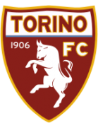 0:0 Bologna Form: DDL Form: DWD |
-1.21 vs -0.15 | n/a | 7% | 0.5 | 😴 0.51 |
🏥 📉 Home team has considerable injuries and a dip in form recently | 📉 Away team has a dip in form recently |
| May 4 | Plymouth 1:0 Hull Form: WLL Form: DWD |
-0.8 vs -0.16 | 1.89 | 7% | 0 | ⚽ 1.44 |
📉 Home team has a dip in form recently | 📉 Away team has a dip in form recently |
| May 5 | Gaziantep 1:1 Hatayspor Form: LWL Form: LLL |
-0.17 vs -1.38 | 2.28 | 7% | 0.5 | ⚽ 1.05 |
🏥🏥 📉 Home team has MAJOR injuries and a dip in form recently | 🏥 📉 Away team has considerable injuries and a dip in form recently |
| May 5 | Antwerp 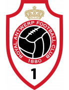 1:2 Club Brugge Form: WLL Form: WWW |
-1.18 vs -0.2 | 1.98 | 6% | 1 | ⚽⚽ 2.05 |
🏥 📉 Home team has considerable injuries and a dip in form recently | 🏥 Away team has considerable injuries |
| May 4 | Metz 2:3 Rennes Form: WWL Form: LWL |
-0.79 vs -0.24 | 2.14 | 5% | 1 | ⚽⚽ 2.08 |
📉 Away team has a dip in form recently | |
| May 6 | Lille 3:4 Lyon Form: WLW Form: WLW |
-0.24 vs -0.99 | 1.98 | 5% | 0 | ⚽ 1.84 |
🏥 Away team has considerable injuries | |
| May 5 | Verona 2:1 Fiorentina Form: DWL Form: DWW |
-0.76 vs -0.25 | 2.44 | 5% | 0 | ⚽ 1.12 |
📉 Home team has a dip in form recently | |
| May 6 | Antalyaspor 1:2 Pendikspor Form: LWL Form: LLL |
-0.28 vs -1.36 | 2.24 | 4% | 0 | ⚽ 1.4 |
🏥🏥 📉 Home team has MAJOR injuries and a dip in form recently | 📉 Away team has a dip in form recently |
| May 4 | Cercle Brugge 4:1 Genk Form: LLD Form: WLL |
-0.98 vs -0.29 | 2.8 | 4% | 0 | ⚽ 1.52 |
📉 Home team has a dip in form recently | 🏥 📉 Away team has considerable injuries and a dip in form recently |
| May 3 | Westerlo 2:2 St Truiden Form: DDL Form: LLD |
-0.29 vs -1.02 | n/a | 4% | 0.5 | ⚽⚽ 2.18 |
📉 Home team has a dip in form recently | 🏥 📉 Away team has considerable injuries and a dip in form recently |
| May 4 | Burnley 1:4 Newcastle Form: DWD Form: WLW |
-1.35 vs -0.3 | 2.12 | 4% | 1 | ⚽⚽ 2.74 |
🏥 📉 Home team has considerable injuries and a dip in form recently | 🏥🏥 Away team has MAJOR injuries |
| May 4 | Boavista 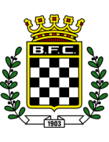 1:1 Gil Vicente Form: LDL Form: LWD |
-0.33 vs -0.67 | 2.72 | 3% | 0.5 | 😴 0.84 |
📉 Home team has a dip in form recently | 📉 Away team has a dip in form recently |
| May 5 | Brighton 1:0 Aston Villa Form: DLL Form: WWD |
-1.51 vs -0.35 | 2.52 | 3% | 0 | ⚽ 1.86 |
🏥🏥 📉 Home team has MAJOR injuries and a dip in form recently | 🏥🏥 Away team has MAJOR injuries |
| May 5 | AZ Alkmaar 2:1 Twente Form: LWW Form: WLW |
-0.37 vs -0.92 | 2.26 | 3% | 1 | ⚽ 1.96 |
🏥 Home team has considerable injuries | 🏥 Away team has considerable injuries |
| May 4 | Stuttgart 3:1 Bayern Munich Form: WLD Form: WWW |
-0.96 vs -0.41 | 2.96 | 2% | 0 | ⚽⚽ 2.95 |
📉 Home team has a dip in form recently | 🏥🏥 Away team has MAJOR injuries |
| May 3 | Almere City 1:1 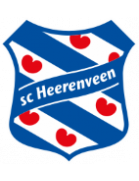 Heerenveen Form: DLL Form: LWL |
-0.83 vs -0.43 | n/a | 1% | 0.5 | ⚽⚽ 2.01 |
🏥 📉 Home team has considerable injuries and a dip in form recently | 📉 Away team has a dip in form recently |
| May 4 | Istanbulspor 0:1 Ad. Demirspor Form: WLL Form: DDL |
-0.43 vs -1.11 | 5.1 | 1% | 0 | ⚽ 1.57 |
📉 Home team has a dip in form recently | 🏥🏥 📉 Away team has MAJOR injuries and a dip in form recently |
| May 4 | Girona 4:2 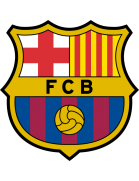 Barcelona Form: LWW Form: WLW |
-0.86 vs -0.44 | 2.46 | 1% | 0 | ⚽⚽⚽ 3.07 |
🏥🏥 Away team has MAJOR injuries | |
| May 4 | Le Havre 3:1 Strasbourg Form: LLD Form: WLL |
-0.54 vs -0.45 | 3.25 | 1% | 0 | ⚽ 1.23 |
📉 Home team has a dip in form recently | 📉 Away team has a dip in form recently |
| May 4 | Kayserispor 2:2 Karagumruk Form: DLW Form: LWW |
-0.45 vs -0.85 | 2.52 | 1% | 0.5 | ⚽ 1.62 |
🏥 📉 Home team has considerable injuries and a dip in form recently | |
| May 4 | Samsunspor 3:1 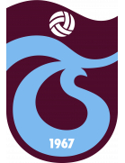 Trabzonspor Form: DDL Form: LWW |
-1.0 vs -0.46 | 2.74 | 1% | 0 | ⚽ 1.49 |
🏥 📉 Home team has considerable injuries and a dip in form recently | 🏥 Away team has considerable injuries |
| May 4 | Brentford 0:0 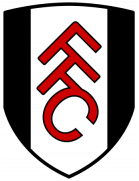 Fulham Form: WWL Form: WLD |
-0.46 vs -0.49 | 2.12 | 1% | 0.5 | ⚽⚽ 2.01 |
📉 Away team has a dip in form recently | |
| May 5 | Farense 3:2 Estoril Form: DLW Form: LDW |
-0.48 vs -0.73 | 2.68 | 0% | 1 | ⚽ 1.63 |
📉 Home team has a dip in form recently | 📉 Away team has a dip in form recently |
| May 4 | Brentford 0:0 Fulham Form: WWL Form: WLD |
-0.73 vs -0.49 | 3.5 | 0% | 0.5 | ⚽⚽ 2.01 |
🏥 Home team has considerable injuries | 📉 Away team has a dip in form recently |
| May 6 | Crystal Palace 4:0 Man United Form: WWD Form: DWD |
-0.96 vs -0.51 | 2.98 | 0% | 0 | ⚽⚽ 2.52 |
🏥🏥 Home team has MAJOR injuries | 🏥 📉 Away team has considerable injuries and a dip in form recently |
| May 5 | Osasuna 0:2 Betis Form: LLL Form: WWD |
-0.52 vs -1.17 | 3.35 | 0% | 0 | ⚽ 1.4 |
🏥🏥 📉 Home team has MAJOR injuries and a dip in form recently | 🏥🏥 Away team has MAJOR injuries |
| May 4 | Sunderland 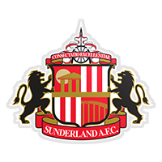 0:2 Sheffield Weds Form: WLL Form: DWW |
-0.55 vs -0.63 | 2.68 | 0% | 0 | ⚽ 1.09 |
🏥 📉 Home team has considerable injuries and a dip in form recently | |
| May 4 | Sheffield United 1:3 Nott'm Forest Form: LLL Form: DLL |
-0.63 vs -0.57 | 1.72 | 0% | 1 | ⚽⚽ 2.38 |
📉 Home team has a dip in form recently | 🏥 📉 Away team has considerable injuries and a dip in form recently |
| May 5 | St. Gilloise 0:0 Anderlecht Form: LWW Form: LWD |
-0.58 vs -0.67 | 1.75 | 0% | 0.5 | ⚽ 1.75 |
🏥 Home team has considerable injuries | 📉 Away team has a dip in form recently |
| May 5 | Celta 3:2 Villarreal Form: LWL Form: DWW |
-0.6 vs -0.62 | 2.42 | 0% | 1 | ⚽⚽ 2.36 |
📉 Home team has a dip in form recently | 🏥 Away team has considerable injuries |
| May 3 | Besiktas 3:2 Rizespor Form: DWL Form: WLD |
-0.6 vs -1.42 | n/a | 0% | 1 | ⚽ 1.76 |
🏥🏥 📉 Home team has MAJOR injuries and a dip in form recently | 🏥 📉 Away team has considerable injuries and a dip in form recently |
| May 3 | Luton 1:1 Everton Form: LLL Form: WWW |
-0.64 vs -0.65 | n/a | 0% | 0.5 | ⚽ 1.68 |
📉 Home team has a dip in form recently | 🏥 Away team has considerable injuries |
| May 4 | Mechelen 2:4 Gent Form: LDW Form: WWW |
-0.64 vs -0.72 | 3.5 | 0% | 0 | ⚽⚽ 2.42 |
🏥🏥 📉 Home team has MAJOR injuries and a dip in form recently | |
| May 3 | Getafe 0:2 Ath Bilbao Form: DDW Form: DDL |
-0.7 vs -0.8 | n/a | 0% | 0 | ⚽ 1.44 |
🏥 📉 Home team has considerable injuries and a dip in form recently | 🏥🏥 📉 Away team has MAJOR injuries and a dip in form recently |
| May 4 | FC Koln 0:0 Freiburg Form: LLD Form: WDL |
-1.17 vs -0.85 | 3.1 | 0% | 0.5 | ⚽ 1.38 |
🏥🏥 📉 Home team has MAJOR injuries and a dip in form recently | 🏥🏥 📉 Away team has MAJOR injuries and a dip in form recently |
Last updated 10:47:35 2024-05-07
Privacy Policy - 18+. Gamble Responsibly. - Terms